| Name | ISO10628-RegNr | ISO14617-RegNr | Possible representations | Symbol |
|---|---|---|---|---|
| Separator | ISO10628-X8081 | - | 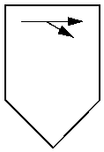 | |
| Impact separator | ISO10628-X2616 | ISO14617-X2616 | 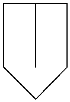 | |
| Gravity separator | ISO10628-X8031 | - | 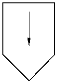 | |
| Wet scrubber | ISO10628-X8124 | - | 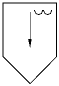 | |
| Spray scrubber | ISO10628-X2621 | ISO14617-X2621 | 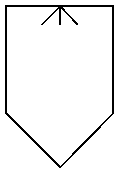 | |
| Electrostatic separator | ISO10628-X8125 | ISO14617-X2627 | 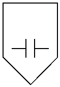 | |
| Electrostatic wet separator | ISO10628-X8033 | - | 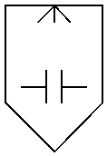 | |
| Electromagnetic separator | ISO10628-X8126 | ISO14617-X2628 | 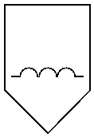 | |
| Magnetic separator | ISO10628-X8127 | ISO14617-X2629 | 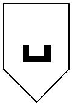 | |
| Rotary separator | ISO10628-X2618 | ISO14617-X2618 | 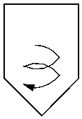 | |
| Venturi separator | ISO10628-X8034 | - | 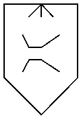 | |
| Thickener | - | - | ||
| Open thickener | ISO10628-X8128 | - | 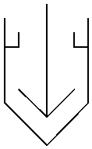 | |
| Closed thickener | ISO10628-X8129 | - | 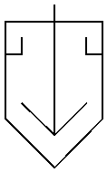 |